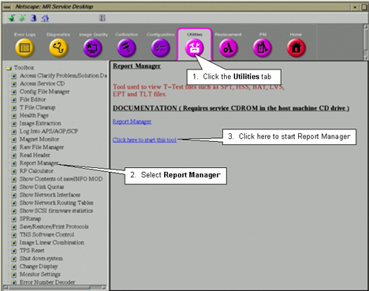
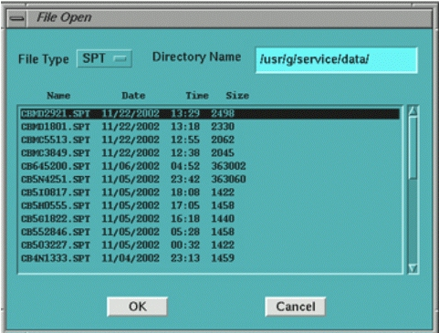

GE Exclusive Use Only
Direction 5440000, Rev# 5
Signa HDxt Service Methods
Module Version 14.0, Version Date 5/10/10
GE Exclusive Use Only |
| Required Persons | Preliminary Reqs | Procedure | Finalization |
|---|---|---|---|
| 1 | Not Applicable | 1.5 hours | Not Applicable |
SPT will run phantom position checks before starting any user-selected SPT except the Coherent Noise Test. It takes approximately two minutes for the head phantom position check and two minutes for the body phantom position check. The test will not start unless the phantom position checks are successful.
Important: After the System Performance Test (SPT) begins, you can stop it at any time by clicking [Abort SPT] or [Quit SPT]. If you abort the test, all valid tests results are assembled into a results file. See Troubleshooting SPT Problems for additional information about clearing conditions that can occur after an untimely abort.
| Item | Qty | Effectivity | Part# | Manufacturer | |
|---|---|---|---|---|---|
| Body TLT Sphere for 3.0T (Pink Solution) | 1 | 3.0T | 2360025 | - | |
| Body TLT Sphere with Loader for 1.5T | 1 | 1.5T | 2248363 | - | |
| Split Head Coil Assembly | 1 | 1.5T | 5182594 | - | |
| Head TLT Sphere with Loader for 1.5T | 1 | 1.5T | 2125244 | - | |
| Body TLT Loader for 3.0T | 1 | 3.0T | 2360037 | - | |
| Head TLT Sphere for 3.0T (Pink Solution) | 1 | 3.0T | 2359877 | - | |
| Head TLT Loader for 3.0T | 1 | 3.0T | 2360031 | - | |
| Head Coil Assembly For G3 | 1 | 3.0T | 5182872 | - | |
| FE Service Key | 1 | - | 2383761 | - | |
| Advanced Service Key | - | 2383760 | - | ||
| Head Loader Positioner | 1 | - | 5110241 | - | |
| Condition | Reference | Effectivity |
|---|---|---|
Cancel all previous exams. Click [End Exam]. | - | - |
Remove any patient positioning devices, such as patient restraints or other attached devices, before placing the nesting plate or other phantoms on the table. | - | - |
Insert a Field Engineer or Advanced Service Key into USB port on host computer. | - | - |
If you run all the tests, these elements are required:
The body sphere with short loader.
Head coil.
Head sphere and loader.
Head loader positioner.
| ||||
| Test functionality and system functionality may be adversely affected if the previous exam is not terminated. Click on [End Exam] to terminate any previous exam. It is not necessary to click on [New Pt] as SPT automatically enters the scan protocol when it is invoked via the MR Tools menu. | ||||
| NOTE: | To verify the top and bottom of the head coil are properly aligned, make sure that the arrows on the NOTICE labels are aligned. |
Attach the head coil to the cradle close to the LPCA and plug it in the LPCA. (See Illustration 1.)
Illustration 1: Head Coil in Superior Location
| NOTE: | Failure to correctly position the head coil will result in SPT failures due to inability to use full travel distance. If phantom positioning is an issue, it will be flagged during the “Phantom Check” at the beginning of the SPT scan. |
Place the head phantom, loader shell and pad into the head coil and align the laser cross hairs with the loader shell cross marks.
| NOTE: | 3.0T SPT phantoms are pink. 1.5T SPT phantoms are light green. |
Illustration 2: Aligning Laser Cross Hairs with TLT Loader Shell
Establish the landmark, but DO NOT advance to scan at this time.
Follow this process to properly position the Body Sphere and Loader.
Properly position the Head Sphere and Loader as previously noted.
Establish landmark on the center line of the Head Loader, but do not Advance to Scan.
Run the cradle in so the display reads 1135 mm.
Illustration 3: Distance between Head Coil Landmark and Center Mark on Body Loader
Turn on the alignment light and then position the body loader on the cradle so that the alignment light is properly centered on the loader crosshair. Ensure that the body loader is stable during scanning.
Press [Advance to Scan].
To start the SPT Full Test tool from the Service Browser, select the [Image Quality] tab and follow the steps in Illustration 4.
Illustration 4: Starting the SPT Test Tool

Select the head coil currently in use, then click [Start SPT]. An SPT Test menu window displays on the desktop. Always use the Full Test Mode.
To select all SPT tests, click [Yes] next to all tests fields. To select individual tests, click [No] next to all test fields, then click [Yes] next to each test you want to run.
To select a reason for the test, choose an option from the Test Purpose drop-down list. If desired, enter text in the Comments field.
To select multiple passes of the test(s), click [Multi Passes] and then enter a number in the field.
Click [Start SPT] to begin.
You may be prompted to make additional selections as the test begins.
Status messages display in the text box below the menu as the tests run. Use the scroll bar on the right to move up or down through the messages.
| NOTE: | SPT will run phantom position checks before starting any user-selected SPT, except the Coherent Noise Test. It takes approximately two minutes for the head phantom position check and two minutes for the body phantom position check. The test will not start unless the phantom position checks are successful. When SPT completes, it will display a pop-up indicating the status of the completed tests. (e.g. "All tests completed successfully" or “a Severe Failure was detected." See Viewing Results - Report Manager Tool .) If there is a failure, go to Step 2.e. |
To see failure details, click the [WhatFailed] button. An example of WhatFailed output can be found in Troubleshooting SPT Problems .
| NOTE: | This screen displays until you quit SPT. If you are in troubleshooting mode, click the [Start SPT] button to go again. |
Illustration 5: Test Selection - Full Test Example

| NOTE: | As each test is running, a message displays in the window indicating which data is being collected or processed. Start time and estimated completion times also display. Although the estimated time may expire, the test is not complete until you see a successful or failure message. |
To exit SPT, click [Quit SPT].
To view SPT results, select the Utilities tab on the Service Browser, then click [Report Manager].
Enter the report manager password (mrgo1) and press <Enter> .
If there is a stop scan condition (such as a hardware error) during SPT, it is recommended that you use [sptreset], or reboot the system. A stopped scan may be caused by the test software being out of sync with the scan software, and a reboot clears this condition. Follow these instructions:
Right-click on the desktop and select [Service Tools] from the root menu, then select [System Shutdown]. Click [Yes] to confirm.
When the message “Okay to power off the system now. Press any key to restart” displays, double-click on the Signa icon (or type Signa in the Login name field), then click [Log In]. Enter the password adw2.0 and click [ Log In] again. Allow initialization to fully complete before any user interaction.
Repeat all of the SPT steps described in this document.
There are three utilities that are useful when you use SPT:
Sptreset - If a problem occurs when exiting SPT in an unusual manner, and the system configuration is not normal, type the following in a C-Shell: cd /usr/g/service/cclass/spt
sptreset [Enter]. This puts all the files and configuration values back in their original condition.
"T" File Cleanup - is a file space management tool. It cleans up the /usr/g/service/data directory. See the procedure for "T" File Cleanup for more information on how to use it. (This can be found in Software – System level software utilities in the documentation)
"whatFailed" - is a quick way to know what SPT tests failed. The preferred way to see the results of SPT runs is by using Report Manager and SPT Stability Viewer (if applicable). This utility scans through user-selected SPT result files and reports what portion of the test failed, and the actual result and test spec for that test. See Illustration 6.
Illustration 6: whatFailed Application

To run the "whatFailed" utility, you can either:
Open a C-shell from the Common Service Desktop, then type: whatFailed (Case Sensitive) and press <Enter>, or
Select the [WhatFailed] button from the System Performance Test GUI. See Illustration 6.
A menu of all the SPT files for that system displays. Select one of the tests (or quit). The utility reads the file comparing each test (except for Coherent Noise) against its limits.
If there are no failing values in the file, you see the following message:
whatFailed does not check Eddy Current results. Please use Report Manager to see Eddy Current PASS/FAIL and specs.
Press <Enter> to continue. The system displays each failure it finds one at a time. Press <Enter> to move through the list of failures.
After SPT has finished the analysis, the data files can be viewed using the Report Manager Tool. The SPT Stability Viewer can be used to view SPT Stability results. The SPT Stability Viewer can be accessed by selecting the Common Service Desktop → Utilities Tab → SPT Stability Data Viewer. The specification files can also be viewed to compare the results against the specifications.
To view SPT results, follow the steps on Illustration 7 to open the Report Manager.
Illustration 7: Accessing Report Manager

When prompted for a password, enter the same password used for the Service Methods CD-ROM. Press [Enter].
The File Open screen displays available reports. See Illustration 8.
Illustration 8: Accessing SPT Reports

To view an SPT report, first make sure the File Type is SPT . If not, click the [SPT] button and select SPT from the list.
Select the report you want to view and click [OK].
Test results display in the Report Manager window. Use the [Previous] and [Next] buttons to view individual pages of the report.
To print a report, select File, then Print from the Report Manager menu.
To view another report, select File, then Open. Select the report from the list, then click [OK].
| NOTE: | For additional information on the Report Manager, select [Software Utilities] from the Service Methods CD-ROM, then [Report Manager Tool]. |
The specification files can be viewed using a text editor. Compare the results from the Signa Report Manager tool with the values in the specification files to determine which parameter is out of specification.
| NOTE: | The limits shown for Specification Files in this System Performance Test procedure are for illustration purposes only. Actual specifications are contained within the files on the system. |
SPT Specification Files (path /export/home/service/cclass/spt/ )
Table 1: SPT Specification Files
| Parameters | File Name |
|---|---|
| Fast Recalled Echo (FSE) Stability Specification File | fsestb.spt |
| Gradient Recalled Echo (GRE) Stability Specification File | grestb.spt |
| Signal to Noise (SNR) File | snr.spt |
Viewing Phantom Position Check Results
After finishing the phantom position check, a results file is created. It contains the measured results of phantom offset, shape offset, and phantom size. The latest head mode and body result files are saved under /usr/g/service/cclass/spt asSPT_pos.result.head and SPT_pos.result.body, respectively. The formats of the two files are the same. Line four, five and six in those files are the detailed results from the phantom position check.
Here is an example of the result file for body phantom position check (SPT_pos.result.body):
#Axial,xcent_offset,ycent_offset,xsize,ysize (mm)= 0 11 264 253 #Sagittal,ycent_offset,zcent_offset,ysize,zsize (mm)= 11 0 252 257 #Coronal,xcent_offset,zcent_offset,xsize,zsize (mm)= 2 2 263 253 #X offset= L 1 mm; Y offset= A 11 mm, Z offset= S 1 mm #X size=259 mm; Y size=253 mm, Z size=260 mm #Shape offset Axial p=4 %; Sagittal p=2 %, Coronal p=4 %
In the example above line four shows that the final phantom offset is 1 mm on L (left) direction along X-axis, 11 mm on A (anterior) direction along Y-axis, and 1 mm on S (superior) direction along Z-axis. Line five shows that the phantom size is 259 mm, 253 mm, 260 mm along X-axis, Y-axis, and Z-axis, respectively. Line six shows that the shape offset will be 4%, 2% and 4% for Axial, Sagittal, and Coronal images, respectively.
In addition, SPT saves phantom position check images in JPG format as /usr/g/service/cclass/spt as autoshim_head.jpg and autoshim_body.jpg for head phantom check and body phantom check, respectively.
The specs for the phantom position checks are:
Phantom Offset: Less than 15 mm along Z direction.
Phantom Size:
for head TLT phantom, the acceptable head phantom size range is 136 mm to 204 mm.
For body TLT phantom, the acceptable body phantom size range is 216 mm to 324 mm.
Shape Offset: Less than 15%.
| NOTE: | Use the gimp tool to view the JPG files. To start gimp, open a C-shell and type: gimp |
Complete a TPS Reset, which takes a few minutes, after completing SPT.
If for any reason an SPT scan is aborted, reboot the system.